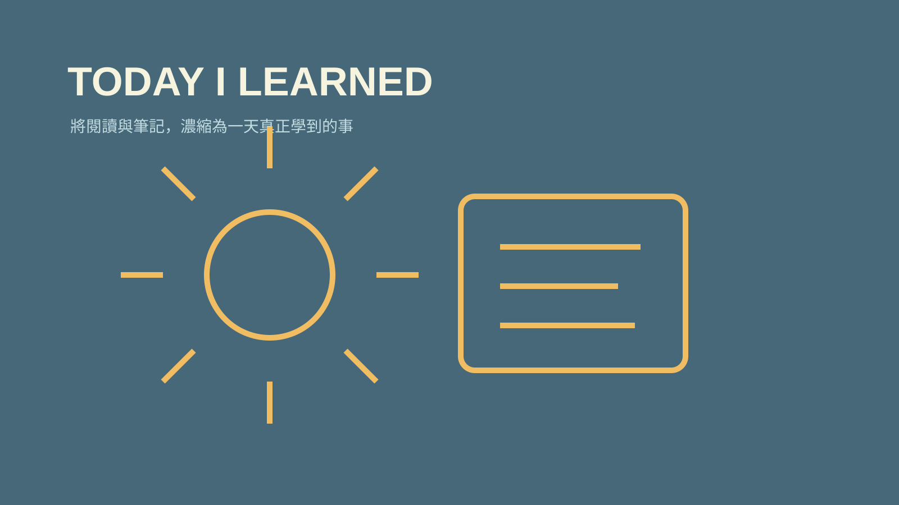

技能包 · 學習工具
每日學習摘要
2026.08 · 個人專案

FIG. 33 — 產品主畫面
關於這個作品
每日學習摘要會掃描當天在第二大腦新增或修改的筆記，搭配 Readwise 新增高亮，濃縮成 Daily log 中獨立的學習摘要。它讓輸入不只被收藏，而能回到每天的反思與累積。
作品亮點
掃描當日新增或修改的 Obsidian 筆記
整合當日 Readwise 閱讀高亮
產出獨立、可回顧的今日學習摘要
避免重複與空泛，保留真正新增的觀點